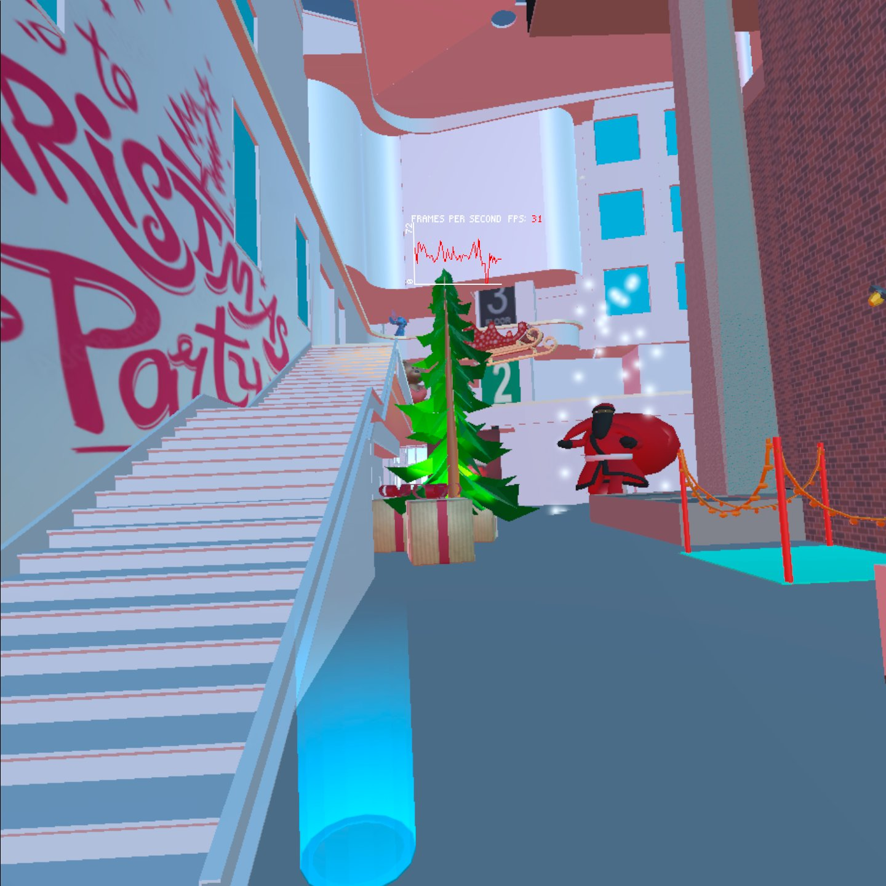
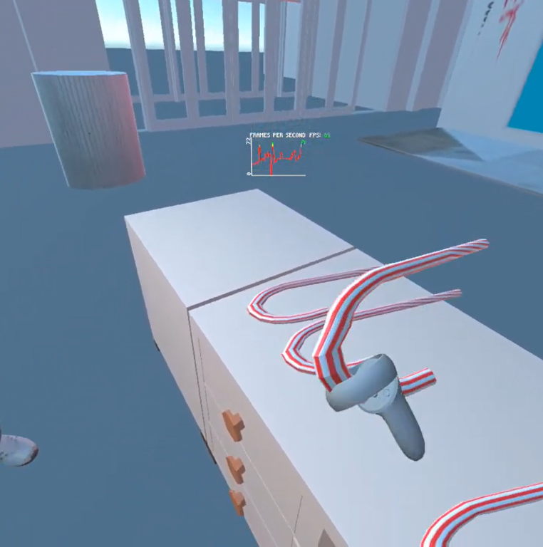

This project is based on unity where we move inside the computer science building at UIC with a fixed theme. This theme has a little flexibility to it as we go around the building. The theme that I have picked for this project would be "Christmas". There a bunch of different grabbable objects and teleportation points set in the atrium space and one can also use the lever to make the christmas tree disappear. The teleportation points come into action when you use the left controller whereas if one would like to teleport remotely, they need to use the right joystick. There are two buttons one on the desk of the shop and another is on the third floor and one can use both these buttons to spawn objects by tapping them. The lever needs to pulled on either side to make the christmas tree disappear.
These are a few examples of how it shall look on the screen:

Here is a link to the project:
Project 3
Link to youtube video
The following methods were used to build this application:
1. Unity -> Here is a link to download the latest version of Unity(2021.3.6f1): Unity A few citations of the sources that were used for this project are as follows:
1. 3D Models:
1. Christmas Tree: https://sketchfab.com/3d-models/low-poly-christmas-tree-bacdf9be9880497cbb2d6d12e30349c0
2. Gifts(Grabbable): https://sketchfab.com/3d-models/present-1-low-poly-403cf4e5ce814903bd1fbde1d2da7122
3. Teddy Bear(Grabbable): https://sketchfab.com/3d-models/reindeer-teddie-low-poly-ddd2bb59161d4f8ca65338742e4cc1fd
4. Santa Clause: https://sketchfab.com/3d-models/santa-clause-low-poly-speed-model-7d34865b0781426f876f1345ad793003
5. Christmas Bells: https://sketchfab.com/3d-models/jingle-bells-3december-94e1cec170be48c09859a863f37d872f
6. Christmas Hats(Grabbable): https://sketchfab.com/3d-models/low-poly-santa-hat-7010557be50e459da9d0a2bcc0cfff4a#download
7. Christmas Lights: https://sketchfab.com/3d-models/christmas-lights-09bfe8a34ecc48faad598c5291734e67
8. UIC Delivery Robot: https://sketchfab.com/3d-models/delivery-rover-519c0d935e214921aeaf5b66fd9cfd6a#download
9. Stitch Toy: "Stitch Toy Low Poly" (https://skfb.ly/6ZpBU) by Priscila Cruz is licensed under Creative Commons Attribution (http://creativecommons.org/licenses/by/4.0/).
10. Christmas Cart: https://sketchfab.com/3d-models/sleigh-1601ca6614a94456b791c5ba5341c096#download
2. Self Made Models:
1. Button
2. Trash Can (Grabbable)
3. The Area to collect Gifts
4. Candy (Grabbable )
5. Gift Thrower Pipe
3. Textures:
Most of the textures used for these models were a part of the package from Sketchfab("https://sketchfab.com/search?type=models").
However, the textures for flat walls was used from the internet.
1. Wall Art: https://as1.ftcdn.net/v2/jpg/02/38/30/60/1000_F_238306029_oOYNJ7nXeP6PG2bv9akisjHVaFst6E5l.jpg
2. Second floor Image: https://static.grainger.com/rp/s/is/image/Grainger/493R28_AL01?hei=536&wid=536&$adapimg$=
3. Third Floor Image: https://m.media-amazon.com/images/I/310Ohi0OLGL._AC_.jpg
4. Rug: https://kebabians.com/product/designer-texture-hand-knotted-distressed-silk-ivory-beige-rug/
5. A Huge Board for people to write messages: https://img.freepik.com/free-vector/background-santa-claus-with-letter_23-2147723150.jpg?w=740&t=st=1669675715~exp=1669676315~hmac=212fecb94fed67152da8f3ae04801421df3bae52d328d06eb87d6e7b709ef91f
6. Christmas Candy: https://www.istockphoto.com/vector/seamless-christmas-stripe-pattern-vector-image-gm943538718-257792577
7. Merry Christmas Theme: https://www.freepik.com/free-vector/merry-christmas-wallpaper-design_19832578.htm
4. Sounds:
1. We Wish you a merry christmas: https://pixabay.com/music/christmas-we-wish-you-a-merry-christmas-125995/
2. Jingle Bells Indie Rock: https://pixabay.com/music/indie-pop-jingle-bells-indie-rock-122771/
3. Robot Sound: https://pixabay.com/sound-effects/electromagnetic-antenna-sound-45903/
4. Santa Clause: https://pixabay.com/sound-effects/santa-claus-merry-christmas-ho-ho-ho-103426/
Here are a few images of the grabbable objects:

And here is the two different scenarios considering the lever:
Here are few pictures of the frame rate changing in different areas:
Thus we can observe that models with lower polygon count have a higher frame rate like the candy and the Mixamo model has lower frame rate since it has a higher polygon value. However, the frame rate stays over 30fps throughout the scene.
A little detailed description on how this technology could be used for informational purposes:
Considering the fact that not everyone gets access to visit different places all the time and can afford a heavy ticket price to fly to different countries or locations to watch/view or see objects, this technology can serve as a great platform for all those people.
If this technology is used by individuals that are ready to explore the world of virtual reality, many activities could be handled by working from home.
This technology serves as a platform to virtually organize the models and data which you imagine creating in the future. For example, the computer science building being built on the UIC campus is still incomplete however an interpretation of how that building shall turn out in the future could be seen through this technology.
Additionally, persons from outside the state, students from other countries, and others who are unable to visit the campus for a variety of reasons can all see the campus at the same time.
They could even enter the various structures, and an educational interactive model might be available. Tell them about the various events that take place in the building for various majors.
The campus can be explored at one's leisure or via pre-planned tours of various parts.
A computer science building might, for instance, feature displays of data structures or a server room that informs prospective students and their families about the entire field of computing.
This building has all the objects that could be part of a real building and give you a real-life experience of how it feels like to be inside of a building.
Additionally, you can interact with all the objects and explore different parts of the objects with factors such as collision and physics. One can also go to different floors using the teleportation method to explore different views of the atrium and using the spawning button to realize the object and button interaction as it may happen in real life.
The lever is just like a real-life lever that either turns off or turns on the light however in this project it just makes the tree disappear.
Thus, these were the listed advantages for this technology related to this project.